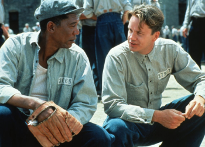

Hello! I'm Audrey.
I can't decide if need money, a large coffee, or 2 weeks of sleep
Favorite
Series
Movies

Shawshank Redemption (1994)
Artists
Authors
- Mitch Albom
- C.S Lewis
- Haruki Murakami
- Rayne Mariano
Books
- Bible
- The Little Prince
- The Alchemist
- The Perks of Being a Wallflower
- A Thousand Splendid Suns
Random Facts About Me
- I'm an INFJ.
- We have two dogs.
- I love love love coffee.
- I believe in aliens.
- I really like being educated on complex issues or topics but I rarely meet people I could talk about it with.
- I already reached the point in my life that I want to delete all my social media accounts. (protect your inner peace, folks)
- I'm currently into podcasts. You can check out my recent fave here.
- I love watching the sunrise, the sunset, the moon, the sky, the stars, and you. (nag-dab)
- I'm a quiet person but I am talkative around right people.
- I miss attending youth camps.
Things I've Learned During Quarantine
Chase your purpose. You have to constantly remind yourself that no one is doing it like you.
It's normal to feel empty sometimes. You don't have to force yourself to be happy at the moment. Your feelings are valid.
Read a good book. Write a gratitude list. Enjoy your youth. The future's uncertain but you are at this every moment - use it wisely.